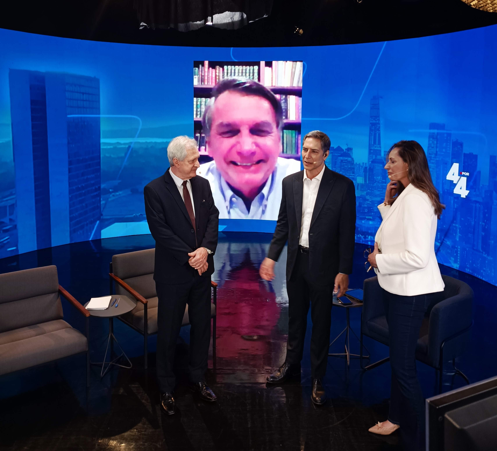

TV aberta, audiência digital, estrutura zero
Criar do zero um programa jornalístico semanal ao vivo, 100% independente, fora do ecossistema das emissoras tradicionais — capaz de competir com a TV aberta usando exclusivamente plataformas digitais.
O desafio não era só de produção. Era construir rapidamente uma base de assinantes e apoiadores para viabilizar o modelo de negócio, ao mesmo tempo que entregávamos um produto com padrão profissional de emissora toda semana, ao vivo, sem rede de apoio institucional.
Programa semanal de debates no horário nobre da TV brasileira
Lançado em 4 de julho de 2021, o Programa 4 por 4 foi ao ar toda semana às 20h30 de domingo no YouTube — disputando diretamente o horário nobre da TV aberta com um formato de debates sobre política, economia e comportamento.
O elenco foi uma das alavancas centrais da estratégia: Luís Ernesto Lacombe, Rodrigo Constantino, Ana Paula Henkel e Guilherme Fiuza. Cada um com audiência própria e consolidada, a combinação eliminou a fase de "partida fria" e criou um efeito multiplicador imediato no lançamento.
"Capital de influência do elenco não é apenas audiência importada — é credibilidade transferida. Quando você combina vozes que já têm autoridade estabelecida, o programa nasce com reputação, não precisa construí-la."

Estúdio do Programa 4 por 4 — Jair Bolsonaro, então presidente do Brasil, como convidado remoto
Três frentes simultâneas desde a fundação
Do lançamento a quase 1 milhão de inscritos
O planejamento de lançamento foi coordenado com uma semana de antecedência — anúncio oficial em 29 de junho de 2021, com divulgação nos canais pessoais de cada apresentador criando efeito multiplicador imediato. O episódio de estreia ultrapassou 700 mil visualizações.
Três camadas: alcance, engajamento e monetização
A arquitetura de conteúdo foi desenhada para operar em três camadas simultâneas, cada uma com função específica dentro do funil de crescimento:
- Programa ao vivo (âncora semanal): o compromisso dominical de 20h30 criava hábito de consumo e senso de comunidade em tempo real
- Cortes e melhores momentos: distribuídos nas redes para ampliação de alcance e aquisição orgânica contínua de novos espectadores
- Conteúdo exclusivo para apoiadores: camada de monetização direta e fidelização da audiência mais engajada
9+ plataformas como blindagem operacional
A decisão de operar em múltiplas plataformas simultaneamente foi tanto estratégia de crescimento quanto gestão de risco. Quando o episódio de estreia foi removido pelo YouTube ainda em julho de 2021 (já com 700 mil views), o ecossistema alternativo garantiu a continuidade das operações.
"Diversificação de plataformas não é excesso — é blindagem. Quando sua operação depende de uma única plataforma, você terceiriza sua continuidade para uma empresa que não te conhece."
Líder de audiência ao vivo no YouTube Brasil
Em menos de três meses, o Programa 4 por 4 se consolidou como o maior programa ao vivo independente do YouTube Brasil, com picos de 120 a 140 mil espectadores simultâneos e liderança de audiência ao vivo no horário nobre dos domingos.
- Crescimento de 0 a 500 mil inscritos em menos de dois meses — um dos mais rápidos da história do YouTube Brasil para canais de notícias
- Quase 30 milhões de visualizações nos primeiros três meses de operação
- Até 800 mil visualizações por semana no pico de audiência
- 347 mil seguidores no Instagram; 125 mil+ curtidas no Facebook
- App próprio lançado em tempo recorde com assinantes pagantes
- Operação contínua de julho de 2021 até início de 2024
O que esse case ensina sobre construir mídia independente
- Consistência cria hábito: o "compromisso dominical" de 20h30 transformou espectadores casuais em audiência fiel — a consistência semanal é mais valiosa que qualquer episódio singular
- Capital de influência elimina a partida fria: elenco com autoridade estabelecida transfere credibilidade para o veículo desde o primeiro dia
- Conteúdo derivado sustenta o crescimento: cortes e melhores momentos funcionam como motor de aquisição orgânica contínua entre episódios
- Comunidade engajada supera audiência passiva: apoiadores que pagam pelo conteúdo exclusivo são mais valiosos — e mais estáveis — do que milhões de views passivas
- Diversificação de plataformas é gestão de risco: o ecossistema de 9 plataformas garantiu continuidade operacional durante crises de moderação